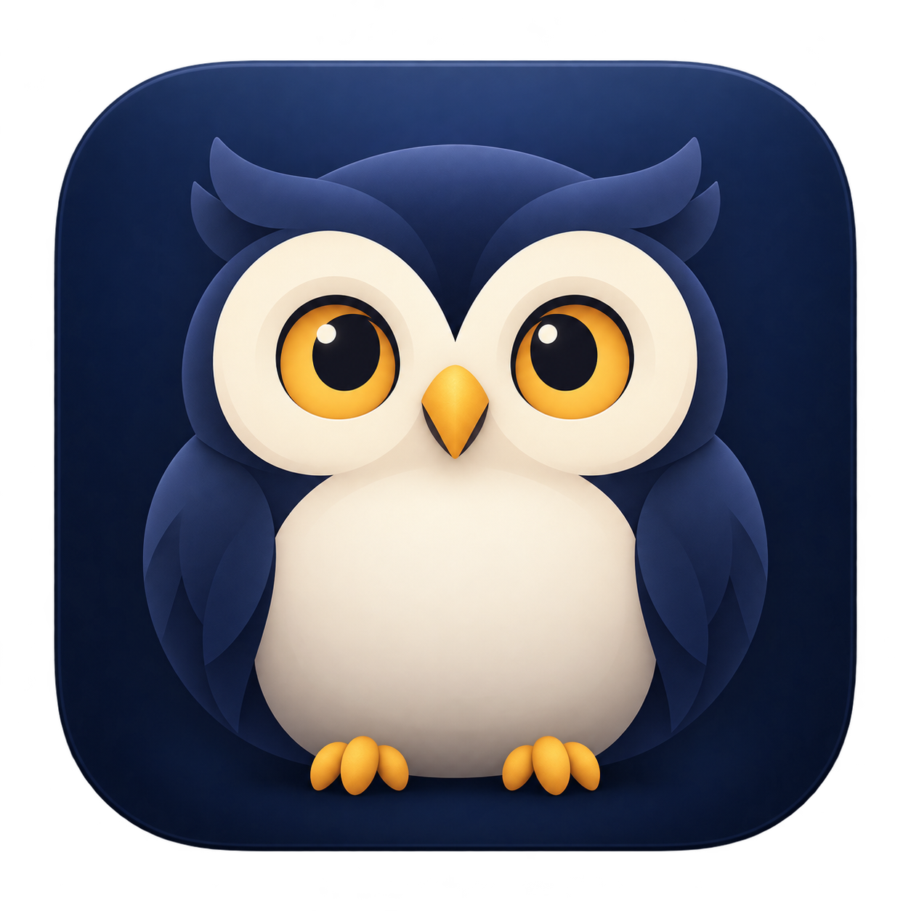

Keep your Mac awake while your agents work.
Nightshift has built-in detection for Claude Code and Codex across compatible terminal, editor, and desktop hosts. ClaudeBar does not need to be installed or running. Your display can still sleep.
/hooks and review/trust the new Nightshift hooks.Setup requires Python 3, backs up configuration, and preserves existing hooks, including ClaudeBar hooks. Each runtime must load its configured hooks. A host with its own configuration home needs separate setup.
For command-line setup, run the bundled installer:
python3 /path/to/Nightshift.app/Contents/Resources/configure-hooks.py
Use --provider claude or --provider codex to configure one provider. Custom CODEX_HOME and CLAUDE_CONFIG_DIR locations are respected. No API key is needed.
Nightshift uses the same approach as ClaudeBar: lifecycle hooks report work and input waits, process checks catch exited agents, and incremental transcript reads recover missed completions and interruptions. The implementation runs inside Nightshift and does not use ClaudeBar's server or saved sessions.
Claude Code and Codex sessions use the same detection regardless of the host that launches them, provided that host emits the configured lifecycle events. Other agents can send lifecycle JSON to Nightshift --hook PROVIDER; the README documents this local adapter.
On a Mac with ClaudeBar, enable Agent Detection → Use ClaudeBar detection (optional) to include its local activity feed. Nightshift’s built-in detector stays active alongside it. If ClaudeBar is missing, closed, or unreachable, Nightshift continues using its own configured hooks and transcript recovery. Open Status & details… for the connection state. Previously reported active work is retained until confirmed finished, its owner exits, or you dismiss it.
Use Tasks for task details and dismissing stale records, Wakefulness for pause/resume and the one-hour override, and Agent Detection for setup and event status. Add Nightshift in macOS Login Items to start it at login. Quit releases its ordinary sleep-prevention assertion.
Keeping an open-lid Mac awake needs no privileged helper. To continue work with the lid closed, install the optional helper from your normal account:
sudo /bin/bash /path/to/Nightshift.app/Contents/Resources/install-lid-helper.sh
During a running task, confirm Closed lid: protected — verified by macOS. Test actual lid-close behavior on your hardware. The helper restores the original power setting when work finishes, Nightshift pauses or quits, its process dies, or its heartbeat expires. Protection is released at or below 15% battery.
To restore the saved setting and remove the helper:
sudo /bin/bash /path/to/Nightshift.app/Contents/Resources/uninstall-lid-helper.sh
Nightshift stores sanitized task state, process identities, transcript paths, and preferences in Nightshift Data beside the bundle. Transcript content is read locally for recovery and is not retained. Built-in detection uses no network service. The optional legacy ClaudeBar feed is off by default for new configurations.
Keep the bundle at a stable writable location. If you move it, rerun setup. For a custom data directory, pass the same --data /absolute/path to the app and hook installer.
To remove Nightshift's hooks while preserving all other hooks:
python3 /path/to/Nightshift.app/Contents/Resources/configure-hooks.py --remove